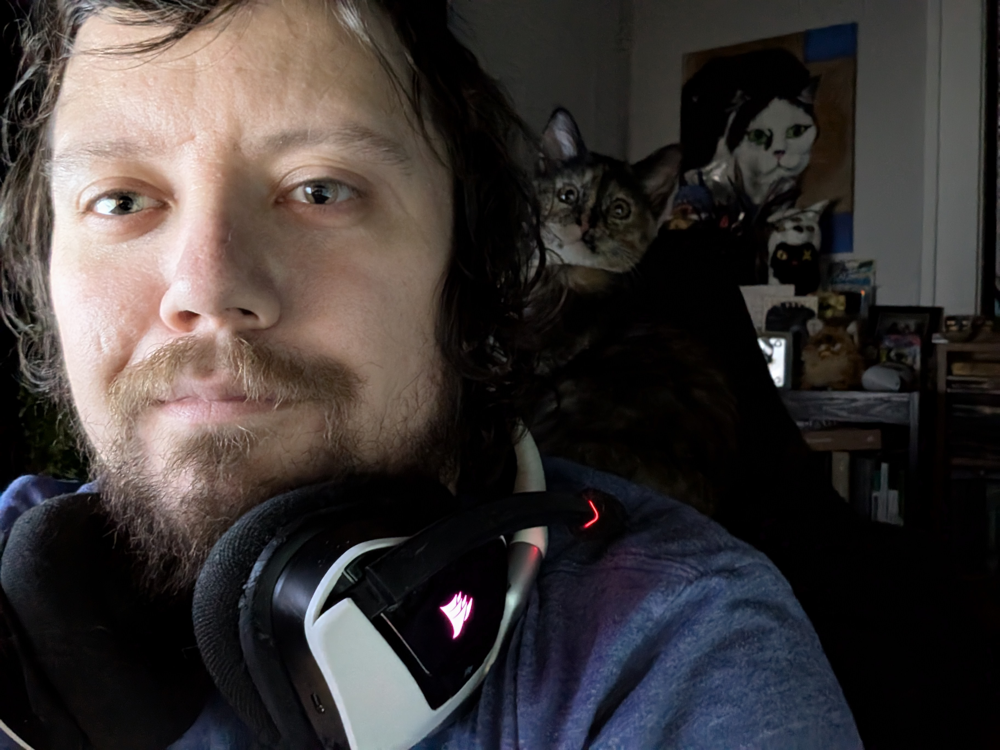

Weddings & Receptions
From ceremony and dinner ambiance to high-energy reception dance sets. With hands-on experience setting up and bartending weddings, I understand event flow and how to keep guests celebrating.
When you need a little spice in your life.

Welcome to DJon. Inspired by the high-octane hype of Lil Jon, the seamless mashup energy of Girl Talk, and even the occasional classical symphony layer over a modern beat, I bring a unique sound to every event. Having worked every side of events from the bar to the booth, my goal is simple: figure out what your crowd loves and keep the dance floor packed all night.
Custom-curated soundtracks tailored to your crowd—heavy on 2000s bangers, pop-punk, hip-hop, and party classics with zero generic EDM.
From ceremony and dinner ambiance to high-energy reception dance sets. With hands-on experience setting up and bartending weddings, I understand event flow and how to keep guests celebrating.
Birthdays, anniversaries, and family celebrations built around the songs and eras that mean the most to you and your guests.
Engaging musical curation for company parties, brand activations, pop-ups, and community gatherings.
I come equipped with a sound system, mixing board, and microphone suitable for small to mid-sized events. For larger venues, I can coordinate directly with the venue's house sound system or arrange rental equipment.
Based in Kansas City, Kansas. Proudly serving the greater Kansas City metropolitan area, and always open to travel for the right event.